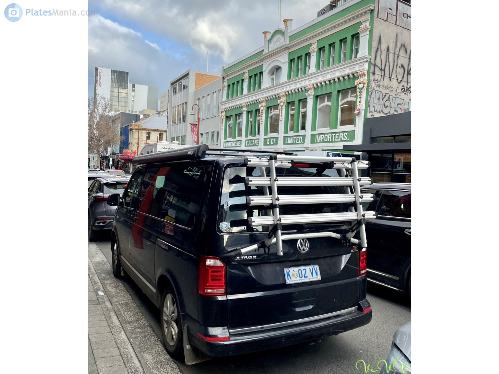
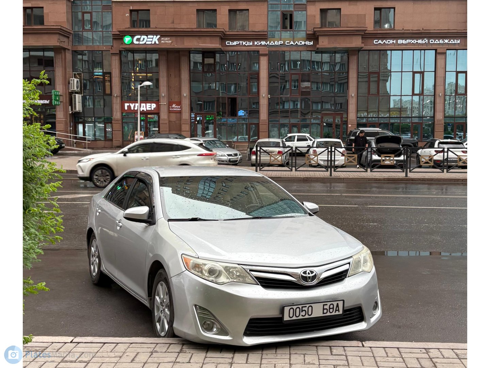
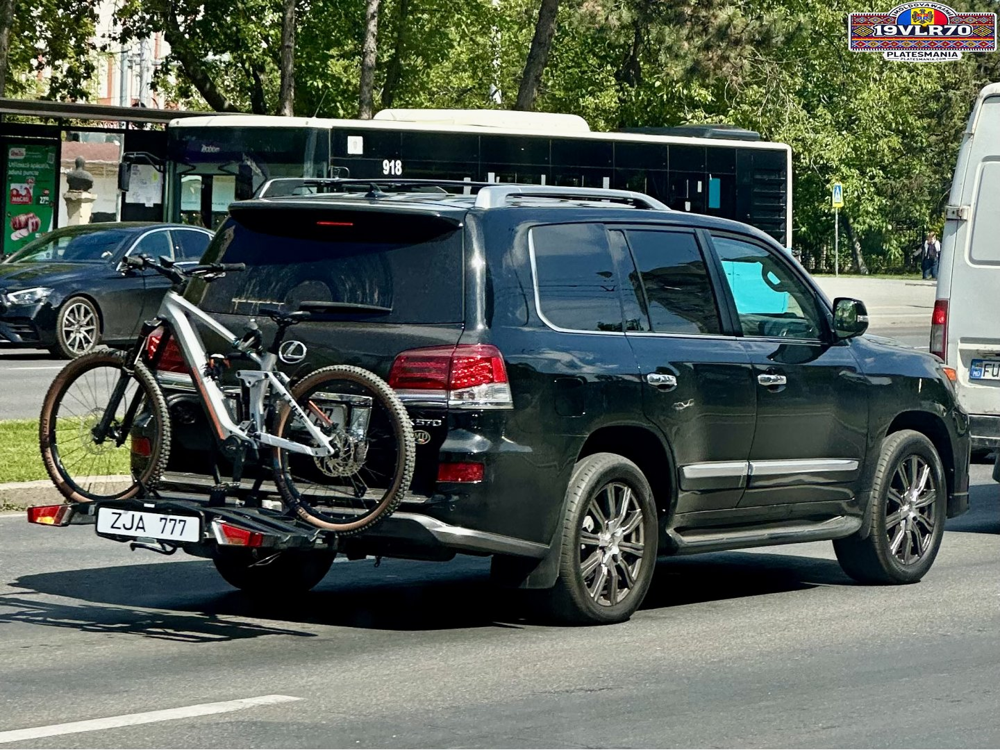
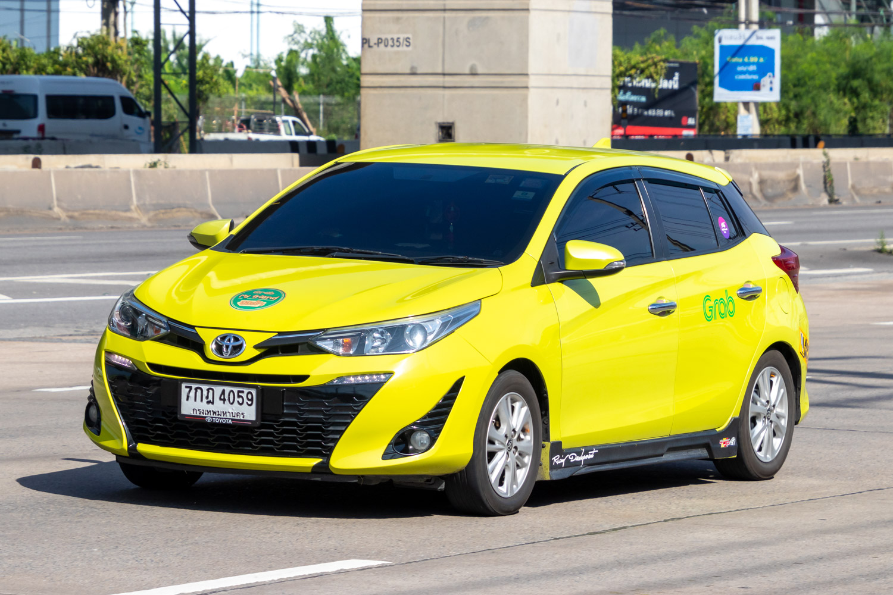
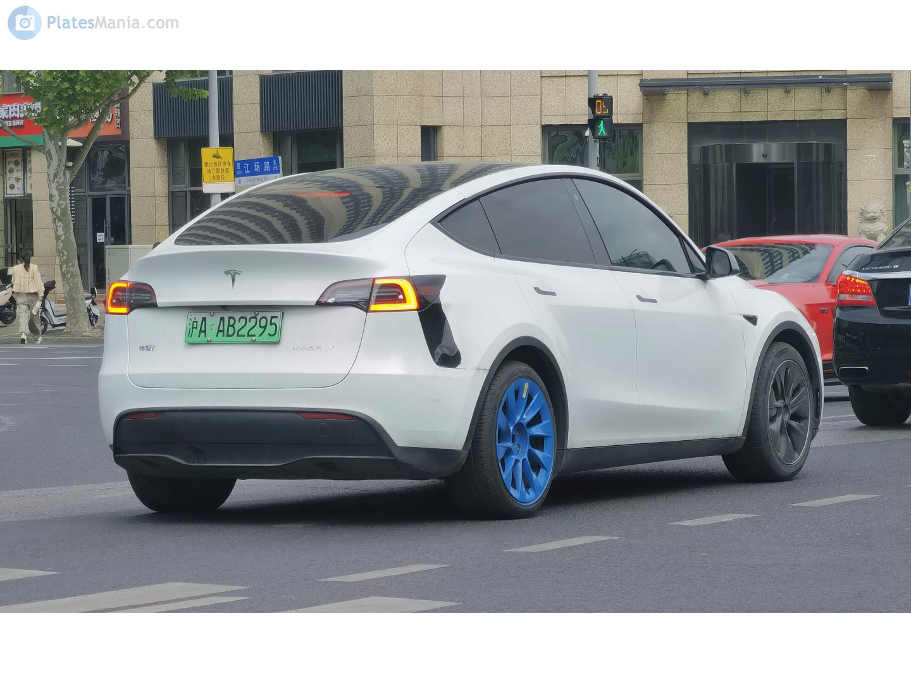

Images
You already know what to do with text: summarize it, answer questions about it, extract data from it. Images, audio, and video are just ways of getting to text and structured data.
Asking questions of images
It's easy enough to send an image to an LLM and ask it some questions. It's easy to read and great for a one-off, but very hard to sort or filter across hundreds of images.

Let's get some details about this car.
vision-llm/raw-openai-text.py — Same task using raw OpenAI client, plain text response — no structured output
import base64
from pathlib import Path
from openai import OpenAI
MODEL = "gpt-5-nano"
DATA = Path("data")
client = OpenAI()
base64_image = base64.b64encode((DATA / "car.jpg").read_bytes()).decode("utf-8")
prompt = """List the following about this vehicle:
- make
- model
- type
- color
- estimated year
"""
response = client.chat.completions.create(
model=MODEL,
messages=[{"role": "user", "content": [
{"type": "text", "text": prompt},
{
"type": "image_url",
"image_url": {
"url": f"data:image/jpeg;base64,{base64_image}"
}
},
]}],
)
print(response.choices[0].message.content)
- Make: Toyota - Model: Land Cruiser (100-series) - Type: SUV - Color: Beige/gold - Estimated year: Early 2000s (approximately 2000–2005)
It's great, but... what if we want it in a CSV? What if we have 200 to do? What if we want to make demands and ask for structure?
Structured output
An alternative is to send an image to an LLM and get back structured output — fields you can sort, filter, and verify. Not prose. This is the pattern for everything else in the workshop!
vision-llm/structured.py — Send one image to an LLM, get structured Pydantic data back
from pathlib import Path
from typing import Literal
from pydantic import BaseModel, Field
from pydantic_ai import Agent, BinaryContent
MODEL = "openai:gpt-5-nano"
DATA = Path("data")
image_data = (DATA / "car.jpg").read_bytes()
class Vehicle(BaseModel):
make: str = Field(description="Vehicle manufacturer (e.g., Toyota, Ford)")
model: str = Field(description="Vehicle model name (e.g., Camry, F-150)")
color: str = Field(description="Primary color of the vehicle")
year_estimate: int = Field(description="Estimated model year (best guess)")
vehicle_type: Literal[
"sedan", "SUV", "truck", "van", "motorcycle", "other"
] = Field(description="Type of vehicle")
confidence: float = Field(description="Your confidence in this identification, 0.0 to 1.0")
Each field has a name, a type, and a description. The AI fills them in.
agent = Agent(MODEL, output_type=Vehicle)
result = agent.run_sync([
"Analyze the vehicle in this image. Fill in all fields accurately.",
BinaryContent(data=image_data, media_type="image/jpeg"),
])
result.output
Vehicle(make='Toyota', model='Sequoia', color='Beige', year_estimate=2005, vehicle_type='SUV', confidence=0.6)
While there are a handful of ways to do this, we're specifically using a Python library called Pydantic AI. It gives you a lot of tools to describe what you're looking for: each field has a name, a type, and a description. AI fills in the fields. It works with all the major providers and handles images, audio, video, and documents.
Easy peasy!
Batch processing
Same thing as before, but we have a whole folder of images. And instead of one at a time, you can make an entire CSV!





vision-llm/batch.py — Process a folder of images into structured data -> DataFrame -> CSV
from pathlib import Path
import pandas as pd
from pydantic import BaseModel, Field
from pydantic_ai import Agent, BinaryContent
from typing import Literal
MODEL = "openai:gpt-5-nano"
DATA = Path("data")
class Vehicle(BaseModel):
make: str = Field(description="Vehicle manufacturer")
model: str = Field(description="Vehicle model name")
color: str = Field(description="Primary color")
year_estimate: int = Field(description="Estimated model year")
vehicle_type: Literal[
"sedan", "SUV", "truck", "van", "motorcycle", "other"
] = Field(description="Type of vehicle")
confidence: float = Field(description="Confidence in identification, 0.0 to 1.0")
agent = Agent(MODEL, output_type=Vehicle)
Now let's process the images one by one
rows = []
image_paths = sorted((DATA / "cars").glob("*.jpg"))
for image_path in image_paths:
result = agent.run_sync([
"Analyze the vehicle in this image. Fill in all fields.",
BinaryContent(data=image_path.read_bytes(), media_type="image/jpeg"),
])
row = result.output.model_dump()
row["filename"] = image_path.name
rows.append(row)
print(f"Processed {len(rows)} images.")
Processed 5 images.
That loop just processed every image in the folder. Now we have a spreadsheet!
df = pd.DataFrame(rows)
output = Path("outputs") / "cars_analysis.csv"
output.parent.mkdir(parents=True, exist_ok=True)
df.to_csv(output, index=False)
df
| make | model | color | year_estimate | vehicle_type | confidence | filename | |
|---|---|---|---|---|---|---|---|
| 0 | Volkswagen | Multivan | Dark blue | 2014 | van | 0.66 | 28246634.jpg |
| 1 | Toyota | Camry | Silver | 2013 | sedan | 0.68 | 28246768.jpg |
| 2 | Lexus | LX 570 | Black | 2013 | SUV | 0.73 | 28262472.jpg |
| 3 | Toyota | Corolla Altis | Yellow | 2015 | sedan | 0.75 | 28262480.jpg |
| 4 | Tesla | Model Y | White | 2020 | SUV | 0.84 | 28266737.jpg |
Open the output CSV. Spot-check a few rows against the source images. Does the make match what you see? Does the color? That's verification — not trusting the model, checking its work.
This is the same approach DW used to measure betting ads in Brazilian football — a custom model classified thousands of frames to count how often each brand appeared on screen.
Swap providers
There are a ton of different providers of LLM stuff and they each have strengths and weaknesses. if you get married to ChatGPT or Claude, you'll never be able to use Gemini's document-processing powers! So instead of using the genai library from Google or the OpenAI library we use Pydantic AI, which allows you a bit more flexibility in swapping between providers.
Let's see how they describe this photograph.
vision-llm/providers.py — Same structured-output task with different LLM providers
from pathlib import Path
from pydantic import BaseModel, Field
from pydantic_ai import Agent, BinaryContent
DATA = Path("data")
image_data = (DATA / "sky.jpg").read_bytes()
class ImageDescription(BaseModel):
subject: str = Field(description="Main subject of the image")
setting: str = Field(description="Where the image appears to be taken")
mood: str = Field(description="Overall mood or feeling of the image")
details: list[str] = Field(description="3-5 notable details")
You can see a list of available providers and models here. The "ollama" one below doesn't even use the internet: it runs on your own machine!
models = [
"openai:gpt-5-nano",
"google-gla:gemini-2.5-flash",
# "anthropic:claude-3-5-haiku-latest",
# "ollama:qwen3-vl",
]
for model in models:
agent = Agent(model, output_type=ImageDescription)
result = agent.run_sync([
"Describe this image. Fill in all fields.",
BinaryContent(data=image_data, media_type="image/jpeg"),
])
print(f"--- {model} ---")
print(result.output)
--- openai:gpt-5-nano --- subject='Sunrise over a rural landscape with lavender along a fence' setting='Rolling countryside with a fence, lavender border, and a distant road veiled in fog' mood='peaceful, serene, slightly mystical' details=['Pastel sunrise with warm orange and pink hues across the sky', 'Lavender blooms lining the right-hand fence and field', 'A winding fence and a large boulder in the foreground', 'A road on the right edge with a sign, fading into morning mist', 'Low-lying fog over the horizon and soft, expansive clouds']
--- google-gla:gemini-2.5-flash --- subject='A vast, open landscape' setting='An expansive field or moor with a road, under a low-lying mist' mood='Serene, peaceful, and slightly mysterious' details=['A vibrant sunset or sunrise painting the sky with orange and yellow hues', 'Thick fog or mist covering the distant landscape and parts of the road', 'A paved road stretching into the misty horizon on the right', 'Large patches of purple flowers (possibly lupines) growing alongside the road', 'A fence running through the grassy landscape on the left side']
OpenAI, Google, Anthropic, Ollama — the code is identical except for the model name. Pick whichever fits your newsroom's budget, privacy needs, or existing accounts. And if you're feeling especially wild, you can even try out openrouter, which gives you a menu of way more than just the Big Three.
Up next: PDFs are just images with text in them. Same pattern, higher stakes.